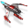
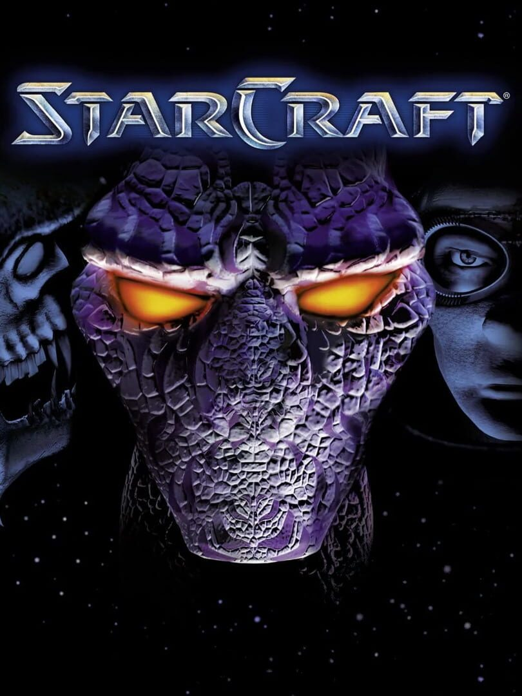

StarCraft |
|
| Tiempo de juego | 2m 0s |
| Última actividad | 13/11/2025 16:38:32 |
| Añadido | 10/11/2025 18:02:32 |
| Modificado | 3/12/2025 18:34:08 |
| Estado de finalización | Jugado |
| Librería | Playnite |
| Fuente | |
| Plataforma | PC (Windows) |
| Fecha de lanzamiento | 31/3/1998 |
| Puntuación de la Comunidad | 89 |
| Puntuación de la Crítica | |
| Puntuación de usuario | |
| Género | Real Time Strategy (RTS) Strategy |
| Desarrollador | Blizzard Entertainment |
| Editor | Blizzard Entertainment |
| Característica | Multiplayer Single Player |
| Enlaces | Official Website YouTube Twitch |
| Tag | |
Esto no es un juego, es una leyenda. StarCraft es el Grial de la estrategia en tiempo real. Es el juego que puso a Blizzard en el mapa como los reyes del género y que creó una escena competitiva que duró décadas.
En un rincón oscuro de la galaxia, tres facciones se sacan chispas: Los Terran, humanos exiliados, fumadores y malhablados, que se la bancan con tecnología "rústica" (marines, tanques, naves); los Zerg, una horda de bichos biológicos onda Aliens que lo único que quieren es devorar y evolucionar (¡la unidad básica se "caga" en el enemigo!); y los Protoss, una raza alienígena ancestral, mística, súper tecnológica y carísima, que pelea con honor y rayos láser.
Lo zarpado es que no hay dos razas iguales. Jugar con cada una es un juego distinto. Pero lo más loco de todo es que este quilombo estaba perfectamente balanceado. Era (y es) el ajedrez de los videojuegos. Pura habilidad.
Un pilar de la historia gamer. Si te gusta la estrategia, tenés que jugarlo. Si no te gusta, jugalo igual para entender por qué fue tan groso.